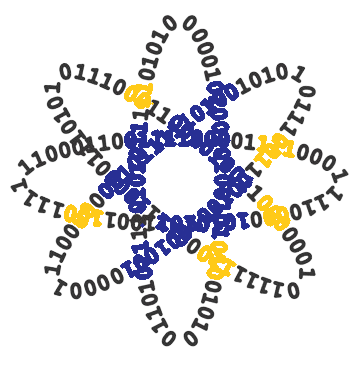

Ciência da Computação
* O que é Ciência da Computação?
É as faculdades das tecnologias que visam o estudo da "Computação" a
qual procede do conjunto das ciências matemáticas dentre outras que realizam
o "computo" (cálculo) de informações e a suas analises para desenvolvimento
de novas ferramentas e áreas das tecnologias com ciências e linguagens, a qual
ganhou esta patente de "Ciência" a partir das outras ciências e linguagens com
o surgimento do "Computador" como ferramenta comercialmente assecível.
* Fontes de aprendizado da Ciência da Computação*